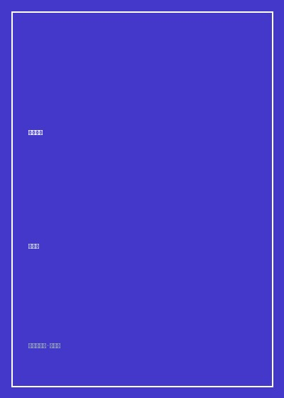

《美学三书》

总体观点
美不是纯粹客观存在的自然物理属性，也不是纯粹主观由心而生的一时情绪，而是人类千万年劳动实践、社会生存与历史文化漫长‘积淀’（Sedimentation）在个体感官心理中的崇高结晶。通过‘自然的人化’，大自然从冷漠的物理对象化为寄托人类情感的审美空间，创造了人性的本体存在。
《美的历程》以汪洋恣肆又极度凝练的诗化笔触，勾勒中华民族从远古图腾到明清市民文化的审美心灵流变史：龙飞凤舞的原始巫术、青铜饕餮的狞厉之美、先秦儒道的理性清醒、楚辞汉赋的浪漫壮阔、魏晋风度的人性觉醒、盛唐气象的青春狂放，直至宋元山水的空灵平淡与明清市井的世俗情欲，谱写了一曲宏大的华夏精神赞歌。
提出‘实用理性’与‘乐感文化’作为中华文明生生不息的底层哲学基因。不同于西方文明非此即彼的罪感文化与超验彼岸追求，华夏美学深植于此生此世的人伦日用之中。天人合一、中庸和谐与对现世生命的温情敬畏，构成了中国人安身立命、消解历史虚无的最高精神避难所。
核心观点
-
1. 青铜饕餮的狞厉之美
商周青铜礼器上狰狞恐怖的饕餮怪兽纹饰，绝非现代人眼中的粗暴丑恶，而是上古早期奴隶制部落战争时代‘神圣不可侵犯的阶级暴力威严’在审美上的崇高积淀。这种‘狞厉的美’凝聚着早期人类征服蛮荒的雷霆伟力。
凝视殷墟司母戊鼎（后母戊鼎）雄伟沉重的双耳与器腹四周吞噬人首的虎噬人纹，读者能够跨越三千年感受到商王室沟通天地祖先鬼神时的战栗与神圣敬畏。 -
2. 魏晋风度与人的觉醒
在东汉儒家纲常礼教崩塌的乱世苦难中，嵇康、阮籍等名士第一次把目光从外在功名官位收回，转向个体生命肉身的短暂与心灵尊严的珍贵。服食行散、长啸竹林与任诞不羁，标志着中国历史上第一次波澜壮阔的个体个性自觉。
《世说新语》记录王子猷雪夜访戴：乘小舟雪夜行至戴逵门前，未敲门便尽兴而返，笑称‘吾本乘兴而行，兴尽而返，何必见戴’，展现了纯粹超越功利目的的精神超脱境界。 -
3. 盛唐气象与狂放青春之歌
李白的诗歌与张旭的狂草，是盛唐帝国空前开放自信、青春活力蓬勃喷涌的最高艺术化身。没有任何后代士大夫那种幽咽呻吟与酸腐自怜，那是整个民族处于童年走向青年时期的纯真豪迈与浪漫狂喜。
张旭‘脱帽露顶王公前，挥毫落纸如云烟’，在醉酒大呼狂奔中将墨汁泼洒在粉墙上，线条如暴风骤雨电闪雷鸣，将盛唐无可遏制的生命力在宣纸上彻底引爆。 -
4. 宋元山水从院体格物走向枯笔归隐
从北宋范宽巨碑式宏大山水对宇宙秩序的敬畏赞颂，过渡到元四家（黄公望、倪瓒）在异族统治失意下的枯笔焦墨、折带皴与空无一人的幽亭，展现了士大夫从庙堂经世济民向个体精神孤绝避风港的深刻迁徙。
倪瓒的《六君子图》一河两岸、三五枯树、绝无一人，画面简淡荒寒至极，以冷峻的留白向纷乱的世俗红尘宣告一种冰清玉洁的道德抗议。 -
5. 华夏乐感文化与情本体的哲学救赎
中国哲学不设立一个冷酷严厉的末日审判上帝，而是把最高价值赋予活生生的人伦情感与现世生活。在‘不知生，焉知死’的实用理性关照下，艺术与诗歌扮演了西方宗教的神圣慰藉功能，让人在落花飞雪中体会生命的深沉暖意。
中国人在清明重阳踏青登高、饮菊花酒抚琴，既缅怀逝去的先人，又赞美眼前初春盛夏的草木生机，在生生不息的时间循环中消解了个体死亡的终极恐惧。
全书思维导图 · 知识脉络树
全书结构
-
第一编 《美的历程》：华夏审美通史的诗意漫游
全书最脍炙人口的篇章，从龙飞凤舞远古图腾、青铜饕餮、儒道互补、楚汉浪漫、魏晋风度、佛陀流容到盛唐诗歌、宋元山水与明清市井画卷。
将敦煌莫高窟不同朝代壁画并置：北魏舍身饲虎的割肉悲壮，隋唐菩萨衣袂翩跹的雍容华贵，直观印证社会阶级心态在宗教造像上的投影变化。 -
第二编 《华夏美学》：儒道释互补的思想基因
深入先秦两汉思想史，系统解构以儒家为骨骼、道家为羽翼、禅宗为心性的华夏美学哲学架构，提炼实用理性与乐感文化内核。
剖析孔子‘子在川上曰：逝者如斯夫，不舍昼夜’的千古感叹，如何将时间流逝的悲剧感转化为自强不息、兼济天下的积极行动动力。 -
第三编 《美学四讲》：实践美学本体论建构
从哲学认识论高度构建系统理论，深入阐发‘人类学历史本体论’、自然的人化、审美积淀说以及形式美在劳动工具制造中的起源机理。
追溯新石器时代石斧磨制从追求实用切割锋利，逐步演变为追求对称流畅线条与温润玉化质感，证明形式审美在物质劳作中的惊人积淀诞生历程。